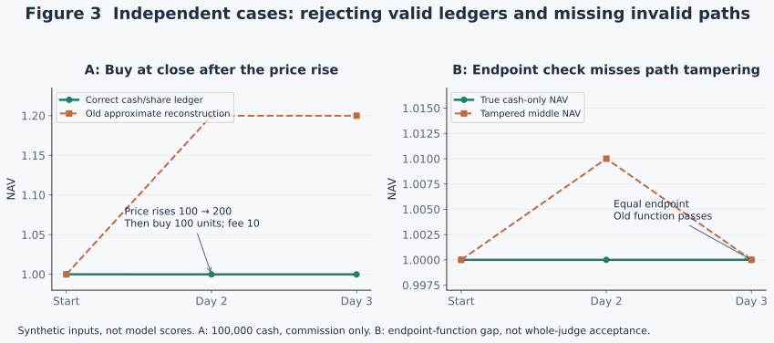

Ruiteng Huang · October 7, 2026 · Interim research note · Evidence cutoff 14:40 UTC
Giving long-horizon agents a reason for their next step
Understanding LoopX’s semantic control plane through EdgeBench
An agent can work for hours and retain its entire conversation while continuing along an unproductive route. LoopX aims to keep the original goal, accumulated evidence and next action connected in a way that can be inspected and revised.
We have been studying this on portfolio risk calibration and Lean proof completion. Relative to our earliest attempts, both blind studies show substantive system-level progress: beyond persistent zeros, ineffective continuation and slow advancement, toward more verifiable artifacts, more reliable sustained work and markedly faster Lean progress in common time windows. LoopX repairs, prompts and benchmark execution improvements contributed together.
Our interim assessment is positive: the semantic control plane is showing value on real tasks, and the overall system is more effective than at the start. We now need to separate contributions and make the observed progress more stable and reusable. This article retains the evidence of overall improvement alongside technical mechanisms and unresolved counterexamples.
1. What the control plane controls
A long-horizon agent maintains at least two histories. Conversation history records what was said and done. Task and evidence state records what must still hold, under which conditions a finding remains valid, and why a next action is feasible. These histories complement each other. Resuming a conversation does not make an old conclusion applicable; completing a Todo does not establish that the original goal has been achieved.
We call LoopX’s approach a long-horizon semantic control plane. The goal and acceptance conditions constrain work; current evidence supports or challenges a route; results lead to continuation, replanning, waiting or stopping. The model proposes and interprets choices. The control plane preserves provenance, checks state transitions and returns the obligations that still apply to the executor.
- GoalAcceptance, scope and stops
- SelectionFeasible candidates and reasons
- ActionWork, validation and results
- EvidenceObservation, interpretation and scope
- RevisionContinue, switch, wait or finish
The guarantees differ across this cycle. A system can verify that work has a matching settlement, evidence names an input revision, and a rejected write leaves no partial effects. Field validation cannot establish that the model understood a qualification or chose the best route. Protocol correctness can be checked directly; cognitive benefit requires behavioral and outcome evidence.
Runtime, Todo counts and graph size therefore cannot stand in for long-horizon capability. We want to know whether the system preserves constraints while rejecting bad routes sooner, reusing validated results and allocating its remaining budget well. Reliable evaluation, recovery and context delivery belong in the same study because each can break that chain.
Research question: can experience improve later choices?
Research question and comparison methods updated October 10, 2026. This revision adds no experimental scores; all numerical results below retain their stated historical versions and observation windows.
We want to test whether, with the same model and comparable budgets, a general harness helps an agent accumulate and use experience well enough to keep making verifiable progress later in execution. A failed route should leave more than “failed before”: its conditions, what it ruled out and what new evidence would justify retrying. Recording that finding, changing a subsequent choice and improving the outcome require separate checks.
A main session that continues to interpret the goal and evidence is one way to study this question; cross-session recovery tests reliable state transfer. Session continuity alone does not establish better use of experience. Fresh-context execution and workflows can also preserve experience through files and external state. Comparisons should record the actual session strategy, available information and handoff cost, letting results determine applicability. EdgeBench Section 5.2 and Appendix G provide relevant comparisons of sustained execution, independent retries and harnesses; they do not isolate LoopX’s incremental benefit.
The 2026-10-16 continuation is integrated below: goals and recovery, evidence follow-through, whole-episode cost, planned/stride, pre-decision checkpoints and real contrasts, and the next study design. The opening and earlier numbers retain their original cutoff.
2. Separate two stages of research
The research has two stages. Early Portfolio risk calibration and Lean proofs tested trustworthy feedback, sustained work and evidence adoption. Recent work uses mature Portfolio and Graph states to study later choices and prepares restorable Ad Placement points. The table preserves the early five execution modes; it is not the current rerun matrix. The latest same-point comparison enables stride in both fresh and retained arms. The next design starts one LoopX donor per task.
| Execution mode | Mechanism retained | Question |
|---|---|---|
| Official worker | Official stop hook and continuation | How far does the official execution path progress? |
| Single Codex call | One call, ending naturally | How much happens without an external continuation loop? |
| Native Goal | Codex goal execution and continuation | What does native long-horizon execution provide? |
| LoopX Resume | Same-session recovery, Todos, replanning and settlement | What do semantic control and reliable continuation change? |
| LoopX Explore | Resume plus optional evidence capture and exploration planning | Does structured evidence enter the next decision? |
The historical Portfolio design covered five workers × native/blind feedback, ten arms. Later work added selective ablations. Lean primarily uses blind runs. Native workers may obtain judge feedback. Blind workers retain public tasks, training data, local tests and validators, but receive neither judge scores nor hidden diagnostics. Background evaluation is an operator observation and is not returned to the blind solver. Blind means no judge feedback, not no feedback.
The model remains gpt-6.1-sol / xhigh. Historical Portfolio/Lean figures retain their budgets, sampling, scorers and dates; earlier 18-hour or extended 36-hour runs are not rewritten. Recent Graph/Portfolio continuation preserves consumed time, opportunities and cooldown within a cumulative 36-hour ceiling. That is not a fresh 36-hour allowance for every new donor. The next design uses task limits of 12/18/18 hours, detailed below.
Earlier work compared seeded phase Todos with goal-derived planned execution, review cadence, context and Explore. Later research selects planned + Explore and explicitly reviews every six settled effective work Turns. This is the current study setting, not a claim that old three-Turn runs used it or that explicit product units changed. Prompts, runners and contracts co-evolved, so early planned results do not establish a general advantage on their own.
Early overall progress, with its original windows
Lean provides direct common-window evidence. Under blind conditions, valid samples from early LoopX v14 and that-stage #5844 runs are shown below. More verifiable proof progress in the same time is a real observation, even before its component causes are separated.
| Lean raw score | Early Resume v14 | #5844 Resume | Early Explore v14 | #5844 Explore |
|---|---|---|---|---|
| 180 minutes | 0.1103 | 0.3478 | 0.1134 | 0.4019 |
| 450 minutes | 0.1882 | 0.5243 | 0.1996 | 0.5605 |
In these single-run windows, the then-current LoopX paths reached roughly 2.8–3.5 times the earlier raw scores. This ratio describes observations. Prompts, task entry, runners and control mechanisms changed together; it is neither the causal gain of one feature nor a result to extrapolate directly to other tasks.
Portfolio improved differently. Early persistent zeros included feedback-wrapper and accounting-contract defects. After repairs, blind arms produced valid ledgers, conducted local research and obtained usable evaluations. Older Resume reached a best sampled 17.32; later planned v17 reached 25.39, but its last sample was only 12.38, versus 15.57 for older Resume. Budgets and scoring revisions also differed. At roughly 7h45, that-stage #5844 Resume/Explore had best sampled scores of 15.01/12.21 and latest samples of 8.15/9.67. Evaluability, continuation and some best observed outcomes have moved beyond early obstacles; terminal quality and sustained retention of good solutions still need work.
This supports a more effective overall system while leaving two questions open: where did the gains come from, and how do we prevent regression with a new version or more runtime? Improving benchmark execution—shared iteration guidance, correct recovery, task-specific sampling and budgets—is itself part of long-horizon systems engineering. Its contribution should be recorded rather than attributed entirely to the graph or replanning.
3. First make the feedback trustworthy
The early Portfolio blind zeros exposed two different problems. Our blind wrapper had removed iterative optimization and best-version guidance along with the judge entrypoint, confounding feedback availability with behavioral instructions. We repaired the wrapper and started new attempts while retaining the old results. Independent reconciliation of completed samples then exposed differences between the evaluator’s assumptions and actual execution semantics.
A tiny counterexample can invalidate a whole curve
Start with 100,000 cash. An asset rises from 100 to 200. Buy 100 units only at the second day’s close and pay 10 commission. Valuing them immediately at that same close gives equity of 99,990 and NAV of 0.9999. The account did not earn the price increase before it bought.
The old reconstruction multiplied post-close weights by the day’s return and produced approximately 1.199919992, rejecting the correct account. In the opposite direction, a true all-cash path [1, 1, 1] reported as [1, 1.01, 1] passed an endpoint-only check. The first counterexample proves false rejection, the second a local check’s blind spot. The latter does not prove that the complete judge accepts fabrication.

For two frozen terminal samples, independent reconciliation without importing solver calculation functions matched all 243 trading days in each: equity residual below 4×10⁻⁹, NAV residual below 5×10⁻¹⁶, and no share-count difference. This established those ledgers’ consistency, not strategy quality. Seven groups of matching trade signatures in another sample corresponded to separate cash, inventory and cost effects. A duplicate signature can trigger investigation; it cannot replace economic verification.
Key technical conventions in ledger-v2
The versioned task fixes initial cash at 10 million with no holdings, close-time execution, 5 bps commission and 1 bp cash slippage. Borrow cost accrues on prior-close short market value at 4% annually using ACT/365 calendar days. Crossing zero inventory becomes ordered execution legs. Cash, integer shares, costs, equity, NAV and weights are validated daily.
Reconstruction starts from executions and prices, not reported cash or NAV. Negative cases cover missing costs, repeated execution identities, extra trades without economic effects, invalid inventory transitions, altered intermediate NAV, missing dates and non-finite numbers. Positive cases include legitimate equal-sized fills, weekend borrow and no-trade days. Rule revisions are versioned; they do not replace historical scores. See EdgeBench #14.
Better feedback does not guarantee a better strategy
The single blind ledger reconciled, yet removing the incorrect NAV penalty still left an approximately −1.87 subtotal, clipped to zero. Removing a duplicate-signature penalty in another sample would yield a counterfactual 18.05. We did not record that as a new official score.
Cost attribution needs economic quantities rather than counts. Of single blind’s 475 fills, 281 concerned hedging, but their commission was only about 0.0412% of initial capital. Borrow cost was about 0.4484%, most of the total 0.7129% cost. Hedging is a task requirement, so deleting shorts is not a valid shortcut. A testable question is whether strategy selection and subsequent hedge adjustments share compatible cost and risk objectives on public training data.
This repair has substantial value with a precise meaning: it helps separate capability from measurement error. It is not a LoopX solving gain. Nor may terminal hidden diagnostics become tailored advice to an active blind worker.
4. Goals, work items and execution need different stopping rules
The numerical tables above retain the initial draft’s evidence cutoff. Added mechanism and closeout observations below extend through 2026-10-08 09:33 UTC. They remain exploratory, change no formal score eligibility and do not replace complete terminal acceptance.
One concrete failure occurred when seeded-blind wrote no_followup after roughly 34 minutes. The outer process resumed about 100 times without restoring useful work. A live scheduler is not a runnable semantic path. In another failure pattern, the system already knew replanning was needed but first offered a predictably invalid choice, forcing a failed call before revealing the next step.
No existing Todo does not imply that the original goal is complete. After finishing a work item, the agent must compare the result with the original acceptance: is it satisfied, does a reasonable next step remain within authorization, is there an external dependency, or is there truly no useful continuation? Replanning may produce work or justify staying on the same route. It should not invent tasks merely to keep a loop moving.
Review completed work turns, not just completed Todos
A long task can remain unfinished for hours, so review should track actual settled work. The effective-Turn repair replaced implicit Todo-completion counting while preserving explicit legacy units. Current continuation and the proposed study use six effective work Turns; early three-Turn and then-product five-count settings describe their own revisions. A due review requires reconsideration, not a route change or new budget.
A Turn here is neither a model message nor a tool call. Cadence comes from uniquely settled work: uncommitted refreshes, retries and duplicate records must not inflate the count. Reaching the interval asks for a review, not a mandatory route change, and grants no budget or authority. Real entrypoints have been tested to trigger while a Todo is still open and to resume work after a justified continuation. Net benefit depends on what the model actually decides.
The counter must also distinguish work from observation. A validated negative result can be effective work; monitor-only polls, duplicate submissions and unsettled attempts do not count. This lets a long-open Todo receive periodic review without letting background sampling trigger pointless replans. A review should connect the original goal, candidate evidence and the next action. Choosing to continue can be correct; acknowledging that a check occurred does not establish better research direction.
Review cost also needs a breakdown by trigger. Periodic checks, a remaining goal gap after a work item ends, and new evidence invalidating a key assumption may need different depths of review. Changing the interval affects only one category. If every small completion rebuilds the global plan, a longer interval may not solve the problem. Conversely, a replan phase can contain useful probes and validation, so its entire duration is not administrative waste. Traces should distinguish useful route revision, repeated evidence gathering and mechanical bookkeeping before testing the boundary between local continuation and heavier global review.
Recovery and settlement are distinct chains
Session recovery preserves execution context. Settlement connects the current Turn, selected work, validation result, durable writeback and budget use. A retry after a lost response needs to recognize existing effects rather than execute or count them twice. Restoring a session without settlement can revisit the same obstacle; correct settlement with the wrong session can lose the solving context.
Earlier repairs addressed exact session recovery, next-action/receipt binding and invalid continuation diagnosis. Recent work adds checkpoint-selection and lifecycle recovery. Resume from the original Turn and committed effects: a lost reply must not duplicate execution or spend, and independent new work requires a fresh legal-path judgment. Correct continuation and useful work selection remain separate acceptance questions.
Keep the original goal visible before selecting work
The following additions are updated through 2026-10-16, distinguishing merged repairs from proposals under review without rewriting earlier windows.
Recent inspection moved beyond whether an agent read a Goal to which goal actually arrived. The original task remained in prompts and files, and agents did read it; some newly created structured benchmark Goals nevertheless carried only generic research reminders. Work could satisfy that reminder while drifting away from the task’s main metric. A separate projection defect borrowed public-display filtering for scoped input: paths or secret-like strings could drop a whole goal paragraph, and research text could be truncated.
#6649 preserves the original task objective and priorities in new Goals and complete source text in authorized same-Goal replan input; public export boundaries remain separate. #6654 reuses that goal projection in the planning horizon, showing the original Objective, provenance, separate acceptance and readback before work selection. A source correction appears on the next read. It creates no second persisted goal and does not rely on repeating a slogan every Turn.
The original-goal repair #6649 is merged; horizon proposal #6654 still awaits independent review. Ordinary installed-package and real-CLI checks verify source delivery, correction readback and unchanged selection authority; old checkpoints are not rewritten. This repairs visibility, not goal prioritization by the model, and cannot explain every earlier low score.
Why failed wakes did not end the whole experiment
In the older Graph stride-on/off comparison, outer wakes failed 20/99 and 14/104 times; successful wakes also recorded 35 and 45 internal stage errors. Failures clustered around review, checkpoint selection and unsettled-state recovery. The outer runner could wake again, while committed candidates, native results and some checkpoints survived. Work therefore continued, but could repeatedly recover the same decision, delay useful action and consume research or capture time.
Recorded failed-stage time was about 49 and 35 minutes, not total loss; 20/99 does not mean 20% of useful work was wasted. Unequal fault burdens confound an overall comparison. The selection-hop repair and lifecycle recovery repair address distinct breaks: preserve the original Turn, recognize committed effects and restore a legal route when independent work arrives. They add no submissions or cooldown resets and do not retroactively convert failures into passes. New studies need actual adoption of the repaired source.
5. Explore must carry evidence into an actual choice
We observed enabled Explore hooks on all 20 reads in two groups’ first 180 minutes, while their graphs remained empty. The model was still discovering things: a counterexample to directly inheriting a tail bound from a finite prefix remained in local validation notes. The missing path was from that result to a scoped graph record, task association and later use. A higher read quota cannot fix a write that never happened.
The response was more than a reminder to write a graph. An optional capability hook attaches capture to ordinary result writeback. The existing observation and route decision can be reused with an explicit question, applicability, input revision and finding status. A linked question can reuse its canonical scope. A low score cannot automatically imply refutation, and pausing a route does not mean it is forever wrong.
- Capture: was a useful result saved, with recoverable rejection and retry?
- Association: did it bind to the current question and Todo with its conditions and version intact?
- Retrieval: did the later decision receive it without crowding out other relevant counterevidence?
- Adoption: did the model use it to change or explicitly retain a choice, followed by consistent action?
Node counts cannot certify this chain. A later audit of four frozen runs found one and three findings in the two Explore arms, but no graph associations on seven inspected Todos. Two first writes lacked node_id; the model tried creating nodes, encountered scope conflicts and eventually recorded findings manually. Nonempty graphs had still not established the full path.
#5889 addresses that friction. A new question derives stable identity from explicit question and applicability; conflicts identify mismatched fields. Existing scope stays immutable, rejected inputs leave no partial effects, and retries do not duplicate records. Writes remain subject to the current Todo, claim and lease. This repairs identity and recovery without inventing scientific findings. Real leased writeback and readback are validated; supplementary runs now also contain natural capture, association and delivery in a later Turn. The graph’s incremental value over files or the same conversation remains unisolated.
Retrieval also needs progressive access: cover distinct questions first, then offer more records per question, with revision-bound pagination and question-specific expansion. Three initial entries can be a sensible context budget; a hard information ceiling of three can discard decision-relevant evidence. Selection and larger access must be assessed together.
Counterevidence: memory can work without a graph
Portfolio traces include retained results across 12 variants, five training years and four warm/cold checks. Another search required training Sharpe at least as high as baseline and turnover no higher, rejecting all nine candidates. That need not be a good research policy: all candidates had lower training returns and four had worse cold-start behavior, suggesting a limited search may have stayed too conservative.
Current Lean Explore also preserves hard cases, records local counterexamples to false statements and moves to other chapters. Files, Todos and the same conversation can carry this information. To establish the graph’s incremental value, we must identify an additional avoided repetition, retained qualification or changed choice. It cannot take credit for all memory.
Evidence, adoption and actual intervention need separate checks
One supplementary Portfolio sample records a risk finding, then implements and tests tail protection. On this period’s actual inputs, however, constrained and unconstrained allocations remain equal. A finding reaching code and passing stress checks does not establish an intervention in this task. A Lean chain proceeds from periodic-review candidate declarations to installing proofs, a full build and later batches. That is closer to adoption evidence than a node count, but still does not exclude the same conversation and local files supplying equivalent information.
A boundary failure is informative too. A supplementary Lean run rejects a ninth question association for one Todo because the active association set is limited to eight. It preserves existing associations, records the extra conclusion as standalone Goal-scoped evidence and resumes ordinary work. This limits one task’s association set, not the whole graph to eight findings. Recovery is not free. Reducing capture friction should preserve relevant decision evidence rather than silently deleting old counterevidence to make a write succeed.
Review the immediately preceding decision
Evidence existing in a checkpoint, a model having read it, and current replanning being able to use it structurally are different facts. We saw a new Goal’s Explore projection report an empty current graph while the archive retained historical research. That requires source/adoption repair, not concluding that experience is absent. Later continuation qualification checked research state, the original goal and actual Explore delivery; mature examples contain dozens of work Turns and over a hundred evidence events. This supports recoverability, not research quality by record count.
In one historical Graph audit, five of ten subsequent reviews still cited an older decision. This can skip the experiment just completed and keep reviewing a stale route. Repair in the existing history-sequence and stride owners retrieves the immediate predecessor in all ten prefix replays and rejects five stale references. It establishes the right review target; the model must still judge execution, new information and progress toward the original goal.
A discriminating record connects previous choice → actual candidate version → completed experiment → public feedback → next adoption or rejection. Explore’s incremental value belongs on that chain: which condition did it preserve, repetition did it avoid or choice did it change? A node, a switch label or a branching graph alone proves none of those.
6. Optimize the information path needed for a decision
One clear redundancy was an exact todo list --todo-id … response repeating the body in detail, list and role views. But traces showed that exact reads were not the dominant path. Models also obtained Todo information from Goal documents, quota summaries, batched commands and prior conversation. Shortening one command could not explain or solve the whole cost problem.
#5844 therefore converged on one goal: deliver the effective current work once, with progressive access to remaining sources. Ordinary heartbeat/quota returns the complete selected Todo, applicable acceptance, scoped open User obligations and participating hook content, without requiring TurnEnvelope. Already delivered sources are removed from pending reads. The mixed Goal document, which contains intent, other work and history, still requires an exact full read.
| Path | Before | After |
|---|---|---|
| Exact Todo | One body repeated across three views | One complete canonical record; inventory queries remain inventories |
| Ordinary quota | Work summary plus follow-up commands | Canonical current sources once, plus reads for remaining sources |
| Optional capability off | Generic skill could still induce useless reads | Participating hook owns the guidance; no routine off-state obligation |
| More background and evidence | Repeated dumps or only short summaries | Provenance, complete reads and expansion by question/revision |
Concrete same-fixture measurements and their limits
Exact Todo output fell from 15,986 UTF-8 bytes and three body copies to 2,721 bytes and one copy. Ordinary quota grew from 23,088 to 27,137 bytes against the command-only version because it carried actual content. Pending sources shrank from preference + Goal + Todo to Goal. This does not establish lower total tokens or latency: if old reads were already batched, removing a CLI process may remove no model round trip.
In 12 frozen real wakes, all received the complete Todo: nine through inline or file-based guards, three through exact reads. Eighteen inspected bodies matched their startup source digests. That establishes delivery and source consistency, not comprehension, complete constraint adherence or total cost benefit. The earlier roughly 78% synthetic compression claim likewise applies only to its measured output.
The next integration’s information organization follows one real decision: complete current-work constraints arrive directly; a same-source original goal anchors selection; additional history and evidence expand by relevant question and revision. Do not mechanically reread an already delivered source. Missing content, failed sources or changed versions require complete reads through the current contract. Authorized research input must not lose its objective or counterevidence to public-display filtering. Optimize the whole decision path rather than one JSON length.
Optional capabilities must not leak through generic guidance. Repeated semantic-preference reads induced by a generic skill while the capability is off are a boundary defect; #5874 returns that guidance to the participating hook. Smaller packets and fewer useless prompts help, but must preserve acceptance tails, applicability, continuation conditions and failure recovery. The optimization unit is the decision path, not one JSON length.
Tool granularity should match a meaningful operation
A direction worth testing is to put state and recovery complexity inside semantically complete tools with clear boundaries: obtain all constraints needed for current work, for example, or submit a result with its source and applicability. A tool may perform several internal checks while the model remains responsible for interpreting evidence and choosing a route. Anthropic’s tool-design guidance likewise organizes interfaces around real work rather than exposing every underlying API to the model.
Fewer commands alone are not the objective. Consolidation must preserve permissions, visible failures and retry semantics. Real execution must show whether an interface is easier to learn, produces fewer errors and turns saved interactions into useful work. #6038 improves action-specific CLI help and recovery from lease-argument errors. That repairs a usage path; it does not yet establish better task outcomes or lower whole-run cost.
Measure the complete research episode
A recent Portfolio fixed 2×2 check covered 14 local cases and 56 result rows. The intervention reduced mean fills from 451.2 to 235.4, about 47.8%; costs fell only from 62,683.15 to 62,682.18, about 0.00154%. Mean Sharpe rose just 0.000133, while drawdown worsened in ten of fourteen cases. A large change in operation count produced a tiny change in the goal. Fewer fills became a candidate mechanism whose value needed comparison with actual headroom.
The local solver used about 25.25 CPU seconds; the two complete wakes containing this research took about 29.66 minutes, ran 90 commands and emitted roughly 68,000 output tokens. A separate completed covariance episode took seven wakes, about 68.05 wall-clock minutes and 144,700 output tokens. These include reasoning, control, authoring, tools and waiting, not pure decoding time. Some diagnosis carries information and is not all management waste. Reporting only a small script’s seconds nevertheless misses the main cost relevant to continuation.
Measure the full episode, then distinguish active work, recovery, waiting and native evaluation. Difference and deduplicate cumulative session usage rather than adding ancestor history repeatedly. Faster local computation, fewer commands or smaller packets count as efficiency gains when they preserve decision information and improve useful output or complete cost.
7. Lean’s historical counterexample: slowdown and candidate allocation
The improved #5844 Resume and Explore arms progressed quickly early on, then were overtaken by historical native Goal in the middle. We analyzed common 180–360 minute windows using solver-visible tool results and frozen source snapshots. Those arms share c0d519cf; historical Goal used c46f397c. Model and public task digest match, but dates, runners, prompts and budgets differ, with one run per cell. This is route diagnosis, not a clean causal framework comparison.
| Blind arm | Raw score at 180m | Raw score at 360m | Net sorry reduction | Files affected |
|---|---|---|---|---|
| Resume / planned / #5844 | 0.3478 | 0.4919 | 502 | 17 |
| Explore / planned / #5844 | 0.4019 | 0.5147 | 442 | 18 |
| Native Goal / historical | 0.3013 | 0.6477 | 1,015 | 41 |
Only valid returned samples are shown. Raw scores use the 0–1 representation without multiplying by 100. Source sorry tokens exclude strings and comments; they are neither proven-theorem counts nor integrity qualification. These rows retain the original common windows regardless of later runtime status.
Proof investment and immediate score differ
The task checks original declarations’ axiom dependencies and types against 2,901 baseline unqualified declarations. Removing a sorry, adding a helper, compiling locally and gaining a valid scored declaration are different events. Bridging custom definitions and Mathlib may pay off downstream. If a dependency still contains sorryAx, a local edit need not earn proportional credit. Missing assumptions cannot be fixed by silently changing required signatures.
Current runs mostly advance chapter by chapter, reaching limits, series, rearrangements and extrema in the middle. A Resume Appendix B.2 Turn spent 16.6 minutes filling six holes. An Explore Section 8.5 Turn spent 31.5 minutes filling 77, leaving a hard case and recording counterexamples to two original false statements. These spans include proof work, validation and settlement; they are not pure proving time. Some useful work does not immediately become positive score.
The historical baseline points toward candidate allocation
At 180–360 minutes, Resume’s reductions mostly came from Chapters 5/6 (213/223), and Explore’s from Chapters 6/7/8 (223/79/140). Historical Goal also advanced Chapters 9/10, Misc and MeasureTheory, accounting for 344 reductions in those four areas. It progressed in 41 files versus 17/18. The arms were not simply doing identical proofs at different speeds; they were choosing different work.
“LoopX never switches routes” is also contradicted. At roughly 197 minutes, Resume explicitly revised surjectivity/order-preservation bridging; around 252 minutes it recognized statement restrictions and switched from a foundations Todo to later chapters. Explore retained rearrangement problems and moved to Section 8.5 near 325 minutes, then preserved counterexamples and moved to 9.1 near 352. Review and substantive decisions occurred. What remains unproven is systematic comparison of feasible work packages and recent validation cost to improve allocation.
The evidence does not show growing management packets
Differences between monotonic session-usage endpoints give roughly 303k/289k output tokens for Resume’s first/second three hours, and 317k/292k for Explore. Tool events containing LoopX calls shrank from 1.14MB/0.72MB to 0.47MB/0.33MB. Those events can include other operations and are a transport proxy rather than exact control overhead. They nevertheless do not support the specific explanation that packets grew in the middle.
Successful full-build logs also showed no increase in summed declaration-audit job duration: Resume 318/257 seconds, Explore 181/119, with samples of 14/12 and 7/5 respectively. Evaluation queues for the corresponding 180/360 minute snapshots took roughly 1.7–3.4 seconds, with evaluation lasting 7.2–11.2 minutes. Delayed display can leave temporary gaps, but cannot explain the slope between those completed capture points. Failure retries and all validation cost are not fully covered.
The next question is therefore more specific than increasing quota or review frequency: can the agent compare routes, distinguish necessary dependencies from independently tractable work, and preserve revisit conditions for difficult cases? The control plane should make those judgments inspectable without hard-coding Lean knowledge or hidden scores into generic rules.
A curve has three clocks
Solver elapsed time, source capture time and score return time are different clocks. Lean’s full build and declaration audit take time, and sampling can queue. The latest returned score may therefore describe source from hours earlier. Placing it at the current runtime can make evaluation backlog look like a research plateau.
We align common windows by original capture time, retain queue and evaluation duration, and separate automated samples, active submissions and final artifacts. A native active submission cannot fill a blind auto-sampling curve; missing is not zero, and the best sample cannot replace the final delivery. Completed common windows still show the new supplement behind #5844: queueing cannot erase that counterevidence. Conversely, returned later #5844 samples still gain credit, so mid-run slowdown alone does not establish an absence of late potential.
Validation and model costs need separate denominators as well. The official repeat also shows concurrent full builds and probes, build interruption and reduced thread settings: validation contention can occur without LoopX. Output tokens divided by task wall time include thinking, tools and waiting; this is not a provider’s pure decoding rate. The evidence supports examining work selection, validation organization and model time together, while their independent contributions remain unresolved.
8. Assessing the improvements
Improvement and technical depth are separate axes. A deep contract repair may eliminate a rare dead loop; a small instruction repair may immediately release substantial work time. We assess the gap removed and its evidence, not PR counts or passed-test totals.
| Boundary | Currently verified | Still unproven |
|---|---|---|
| Goal and feedback | Reproducible ledger misjudgments repaired; full Goal input and same-source horizon proposals have real CLI/installed readback | Actual adoption, task prioritization and net benefit; old checkpoints are not migrated |
| Research state and recovery | Joint capture, fresh before review, original identity/opportunities/cooldown/deadline, mature-point continuation and further work are inspectable | Sustained stability as points grow, complete historical cost and a complete user-facing restoration journey |
| Evidence and review | Conditional capture, later delivery, immediate-predecessor review and real behavior chains; negative results and stale citations preserved | Explore beyond session/file memory; correct references yielding better choices |
| Planned and stride | Merged initial-quality/later-gain distinction; questions about retained best, goal bottleneck and actual implementation | Initial quality, later gain and cross-task stability after new-source adoption |
| Effect and efficiency | Graph quality gains outweighed by time penalty; Portfolio transfer counterexamples and a small best gain; episode costs decomposed | Repeatable net benefit in clean matched studies, beyond local speed or repair counts |
Early system progress supports continued research. Recent work moves the question from sustaining execution to using early experience for better later choices. The changes and cases below separately assess inputs and judgment mechanisms, actual adoption, native outcomes and full cost. These levels cannot substitute for one another.
Planned and stride: start well, then measure additional gain
The recently merged #6621 restores an important distinction in shared planning: deliver a strong, coherent first artifact feasible within the budget. Do not manufacture a weak start and call repayment of that quality deficit long-horizon capability. Useful diagnostics remain legal, and preparation cannot postpone delivery indefinitely. Later improvement is anchored to the retained best artifact.
Stride keeps its three axes: work scope, route distance and validation scope. Its questions more explicitly compare the remaining authoritative gap, limiting component and plausible headroom; check actual implementation of the proposed mechanism; and distinguish an unexecuted change, failed transfer and insufficient route potential. For a candidate’s own screening threshold, ask what goal it protects, how the incumbent behaves under the same control and whether the discrepancy warrants vetoing an informative native evaluation. These guide judgment rather than force a numerical algorithm switch every few Turns.
The trajectories also contain more than small parameter changes: full covariance, class-prior and within-class ranking approaches differ in mechanism. The unresolved issue is whether they affect the factors limiting native reward and complete an informative test at proportionate cost. Better questions, correct evidence and larger experiments may help; actual adoption and later outcomes establish their value. Frozen old runs were not hot-updated, so a source merge cannot be credited with changing their choices.
9. Branch the same research state to test later choices
2026-10-16 update: checkpoint continuation and trajectory diagnosis under frozen sources, not a new complete benchmark ranking. Historical versions and figures remain distinct. All four current research workers were deliberately stopped; scores, trajectories and archives were retained.
A major recent engineering result is making mid/late research branchable and inspectable. Native execution history, LoopX research state, workspace code, incumbent, public feedback, submission opportunities, cooldown and cumulative budget must be saved at one safe boundary. Code alone loses the reasons for reaching this state; conversation alone loses executable state; successful snapshot creation does not establish restoration and useful continuation.
- GoalSame source, constraints and remaining budget
- CapturePrior work settled; current decision not yet made
- ReplanRetained history, or fresh from shared evidence
- ExperimentImplement and obtain legal native feedback
- AdoptionKeep the best; measure net gain and full cost
Joint archive and recapture, complete preparation deadlines and fresh continuation before replanning progressively connect saving, restoration, evidence adoption and further work. Qualification includes isolated Linux, actual native HTTP/SQLite/Docker, ordinary installed packages and mature research points. Scripted models establish the mechanical chain, not model judgment. Concurrent receiver publication, native execution receipts and confirmed cleanup must also qualify together; one independently passing PR does not certify the final integration.
One study-design correction was crucial: dump before replan, then let the fresh conversation make the new decision. Reviewing in the old conversation and asking a fresh one to execute that completed decision tests execution context, not fresh replanning; that option has been removed. Both conversations can access the same checkpoint research and original goal. The difference is retained native conversation history. Both arms enable stride; this is not a stride-on/off contrast.
Graph: higher classification quality did not improve the full goal
The latest Graph continuation pair used frozen LoopX source 7b8b08f8. Native scoring also penalizes solution time. Higher classification/calibration quality need not improve the total. The three bound complete evaluations pass all four checks across ten splits, with no resource penalty:
| Graph raw score | Quality term | Time penalty | Final score | Mean solution time |
|---|---|---|---|---|
| Inherited incumbent | 0.753764 | 0.018622 | 0.735142 | 6.68 s |
| New retained-history candidate | 0.755289 | 0.022892 | 0.732397 | 10.47 s |
| New fresh candidate | 0.754762 | 0.028028 | 0.726734 | 17.89 s |
Quality gains of about 0.001524 and 0.000998 were outweighed by extra time penalties of about 0.004269 and 0.009406. Both arms retained the original best. This locates the next question in the full quality–time tradeoff rather than a higher classification submetric. Single-run timing still depends on conditions; it does not show that fresh context is inherently slower.
Portfolio: a larger route can still have insufficient headroom
A full-covariance candidate raised mean Sharpe across five public training proxies from about 1.394 to 1.504, yet native Sharpe fell from 1.3731 to 1.3272. Its score was 16.94 against inherited best 20.53. Drawdown and turnover components already earned 15/15 and 5/5 in this sample. Tightening those constraints does not automatically create alpha or risk-adjusted return. A negative result should separate failed transfer, inactive intervention and insufficient route potential before selecting the next experiment.
At this stop, Portfolio’s retained-history arm had best legal score 20.54 and fresh had 20.53: a 0.01 increase above the inherited best for the former. Neither Graph arm exceeded its inherited best. Real research, valid native evaluation and incumbent preservation occurred; the small difference establishes no general superiority for fresh, retained or stride. Older fault-affected cohorts, this latest continuation pair and future repaired-source studies remain separate.
A later audit found another input-path defect: checkpoint handoff requested a full-decision capture directory, but the heartbeat renderer also enabled the short TurnEnvelope view. All four recent arms record that implicit activation, so they cannot establish effects on the ordinary default-input path. Pre-decision preflight still retained the complete original packet and required it to be read; this does not show that historical goals or evidence were entirely lost, and shared exposure does not prove no effect. Repair candidate #6661 separates capture from input projection, selecting the short view only through an explicit option. Full capture, subsequent selection and actual native restoration must be validated together. Accurate configuration receipts do not establish a correct study configuration.
10. Current next step: fresh sources, complete research points and matched studies
Earlier Portfolio/Lean supplements retain their original records; they are no longer the active launch plan. The four recent Graph/Portfolio continuation workers have stopped, along with their controllers and owned services. Feedback and archives remain. Interrupted/unknown terminal receipts are not relabeled completed, and known individual native results do not automatically qualify the entire run. Historical capture integrity, cost and scientific closeout still require explicit reconciliation.
New studies use the latest qualified integration, separately pinning LoopX, runner, native provider, scorer, task, image and ordinary package; old runs are not hot-updated. First qualify the complete original goal, research evidence, real restoration and useful work, then start model research. The design below replaces the old four-arm supplement plan, adds no cancelled official baseline and does not rescore and stitch old versions.
Next design: three fresh donors, then same-point ablation
Continuation can save the cost of accumulating early research, but repeatedly reusing fault-affected old points cannot establish the repaired product’s overall effect. The current proposal starts one fresh LoopX donor each for Portfolio, Graph and Ad Placement on the latest qualified integration, retaining gpt-6.1-sol / xhigh and using planned + Explore with stride off and ordinary review retained. TurnEnvelope stays off in donors and receivers; checkpoint capture is independent, and actual input is verified. Qualify one task’s normal entry and first useful research before admitting the others. This proposal is not yet frozen or launched; no new paid experiment was started for this update.
| Stage | Design and criterion | Budget and limits |
|---|---|---|
| Accumulate from scratch | One arm per task; pin task, model, scorer, installed source, feedback and prompt; inspect initial delivery and actual evidence adoption | Task limits of 12/18/18 hours, at most 48 worker-hours; no six-arm fresh matrix |
| Produce research points | Capture before natural replans; preselect safe boundaries near half and three-quarter time, targeting two qualified mid/late points per task | Six target points; no score-based selection, deletion of stalled/low-scoring observations or artificial replans to hit a clock |
| Compare the same point | Proposed first comparison: Portfolio and Graph, same goal, evidence and version, both replanning fresh, varying stride on/off only; compare fresh/retained separately | Equal four-hour marginal windows, reporting common 1/2/4-hour outcomes; preserve consumed budget, opportunities and cooldown; account separately for later context-arm costs |
A quality checkpoint is complete, attributable, captured before the current decision and actually restorable in an ordinary package. Sparse research is itself an observation; quality must not become post-hoc winner selection. Native submission has a one-hour cooldown from acceptance, is initially eligible and receives no extra tail grading. Review cadence is six settled effective work Turns throughout. A defect in goals, evidence, restoration or feedback stops the affected pair; preserve its reason and failure cost, then record a separate repaired attempt.
Primary outcomes are legal native gain above inherited best, time to first gain and complete marginal cost. Process evidence asks how a negative result changes the next real experiment. Three fresh LoopX trajectories versus historical official runs remain descriptive. General LoopX-versus-native effects require separately admitted native repeats on the same version and budget; historical baselines cannot be stitched into a new causal control.